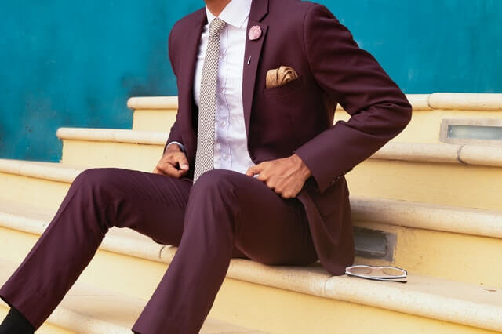
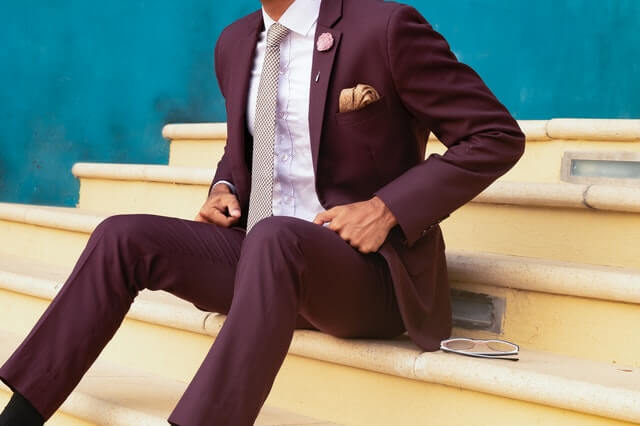

The forefront of business fashion.
Learn from the Fashion Emperor
The forefront of business fashion.
Learn from the Fashion Emperor
NOVEMBER 24, 2020 8:49 AM
In the fall of 2020, Mr. James Thomas, known as the Emperor of the business fashion world, is launching a new trend.
Since his fashion is a bit dissociated from business it's sometimes controversial, but the combination of sophisticated
tops and bottoms is praised by the world.
While he is a major figure in an IT company in NY,
He is a super busy fashion model who appears in 40 fashion shows a year all over the world.
Not only that, there are well over 1000 companies and producers trying to approach him, including offers as a singer,
movie appearances, and headhunting from top companies.
"How has he built up his career?"
"How can I become a star from the average person like him?"
People would have had such questions many times.
MEN'S NORIS has successfully conducted an exclusive interview with him to approach these answers.
Key to succeed is...Color!
The main four colours for suits worn in business are black, light grey, dark grey, and navy, either with or without
patterns. In particular, grey flannel suiting has been worn very widely since the 1930s. In non-business settings or
less-formal business contexts, brown is another important colour; olive also occurs. In summer, lighter shades such as
tan or cream are popular.
For non-business use tweed has been popular since Victorian times, and still is commonly worn. A wide range of colour is
available, including muted shades of green, brown, red, and grey. Tweeds are usually checked, or plain with a
herringbone weave, and are most associated with the country. While full tweed suits are not worn by many now, the
jackets are often worn as sports jackets with odd trousers (trousers of different cloth). [15]
 

Suit & Sunglasses. Most Attractifve
Fashion trends can be another reason for wearing sunglasses, particularly designer sunglasses from high-end fashion brands. Sunglasses of particular shapes may be in vogue as a fashion accessory. The relevance of sunglasses within the fashion industry has included prominent fashion editors' reviews of annual trends in sunglasses as well as runway fashion shows featuring sunglasses as a primary or secondary component of a look. [16]


A dress shirt, button shirt, button-front, button-front shirt, or button-up shirt is a garment with a collar and a full-length opening at the front, which is fastened using buttons or shirt studs. A button-down or button-down shirt is a dress shirt which has a button-down collar – a collar having the ends fastened to the shirt with buttons. A dress shirt is normally made from woven cloth, and is often accompanied by a tie, jacket, suit, or formalwear, but a dress shirt may also be worn more casually. In British English, "dress shirt" ("formal shirt" or "tuxedo shirt" in American English) means specifically the more formal evening garment worn with black- or white-tie. Some of these formal shirts have stiff fronts and detachable collars attached with collar studs. [17]
The term ikemen is a portmanteau neologism derived from the Japanese words ikeru or iketeru and menzu. Ikeru and iketeru mean "cool", "good" and "exciting", while menzu is the Japanization of "men". This term has been used to reference good looking men featured in Japanese pop culture. Ikemen are typically characterized as being sharply dressed individuals with slanted, intelligent eyes, husky voices, slender wrists and fingers, a manly build, an unruffled appearance, pale skin, and clean smelling with an air of mystery around them. Ikemen are typically reserved with the ability to become passionate in their interests with the impression that they are literary geniuses. [18]
Written by N.Noris